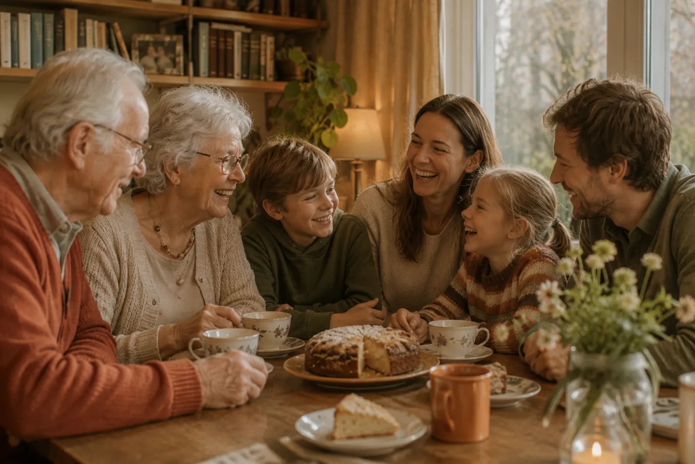

Babbl is er in de eerste plaats voor uw vader of moeder: om zelf de dingen van alledag te blijven regelen. U bent erbij wanneer zij dat willen.
Veel van wat uw ouder nu aan u vraagt, kan hij of zij met Babbl gewoon zelf: een brief begrijpen, een afspraak terugvinden, iets opzoeken. Dat scheelt u telefoontjes — maar vooral houdt het uw ouder zelfstandig.
En als het samen fijner is, of er echt hulp nodig is, dan haalt uw ouder u erbij. Met Babbl weet u dan meteen waar het om gaat.

Altijd op initiatief van uw ouder. Dit is wat u dan in de Babbl-app ziet.
“Wil je deze brief ook even met Anne delen?”
“Wil je Peter laten weten hoe laat mijn afspraak is?”
“Wil je mijn dochter vragen of ze me naar de tandarts kan brengen?”
“Mijn dochter doet straks boodschappen.”
Er is geen aparte “familie-app”. Iedereen gebruikt dezelfde Babbl-app, in een eenvoudige of een uitgebreide weergave. Wat iemand mag, hangt af van wat uw ouder toestaat — niet van welke app het is.
Babbl instellen kan uw ouder zelf doen, of u doet het samen — bijvoorbeeld het koppelen van de e-mail. Wie begint, kan daarna anderen uitnodigen.
Iemand toevoegen met ruime rechten gebeurt bij Babbl, in huis, hardop. Zo kan niemand op afstand zomaar meekijken — ook geen oplichter die uw ouder aan de telefoon iets laat doen.
Wat uw ouder met u deelt, gaat versleuteld van Babbl naar uw telefoon.
We zoeken ouderen en families die Babbl willen gebruiken en ons willen vertellen wat werkt en wat niet. Laat uw gegevens achter; we nemen contact op zodra er plek is.